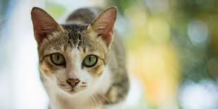

La Heterocromia
La heterocromía (ojos de diferentes colores) es cuando los iris de una ser vivo son de diferentes colores.

La Heterocromía es una condición causada por la combinación de genes que afectan la pigmentación. Generalmente, en el caso de gatos blancos y negros, ocurre cuando en los genes dominantes este el color blanco o cuando los genes responsables de las manchas blancas sean los dominantes.
¿Qué significa que un gato tenga 3 colores?
Es una regla casi exacta: si un gatito tiene tres colores será una hembra.

En realidad, solo uno de cada 3.000 gatos tricolores es un macho, y la inmensa mayoría de ellos son estériles.
Los machos pueden tener uno o dos colores en su pelaje, pero la combinación de tres tonalidades es casi exclusiva de las hembras. La genética está detrás de esta curiosidad felina.
¿Qué es lo que mas odian los gatos?
Nuestros felinos son animales cuyo sentido del olfato es bastante sensible a los olores fuertes.

Ciertos olores como el del ajo, el del humo del tabaco, la pimienta, los desodorantes, el eucalipto, el vinagre o los cítricos, entre otros, les pueden resultar molestos.